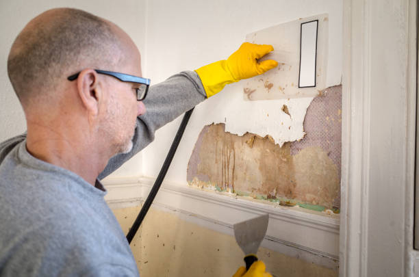
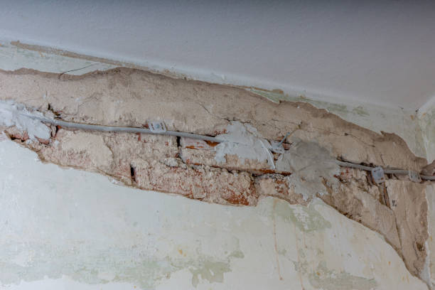

We provide swift and effective commercial mold remediation services to safeguard your business and ensure compliance with health standards.
Safeguard your business! Our commercial mold remediation services efficiently address mold issues, ensuring a safe and compliant environment in Usa - Nationwide.
Residential & commercial Water Damage, Fire Damage and Mold Remediation
Quality services at affordable prices
Immediate 24/ 7 emergency services


In today's world, ensuring your home remains a safe and healthy environment is paramount. Water damage can strike unexpectedly from various sources, such as burst pipes, faulty appliances, or natural disasters. When you experience water damage in your home, timely response is crucial to mitigate further loss and restore your property effectively. At Water Damage, Fire Damage and Mold Remediation, we specialize in residential water damage restoration . Our highly trained technicians utilize advanced techniques and equipment to assess the damage, extract water, and restore your home to its original condition.
Why Choose Us? With years of experience in the industry, we understand the intricacies of water damage. Our team is dedicated to providing exceptional service and results, ensuring you feel supported throughout the entire restoration process. We are fully licensed and insured, and our commitment to customer satisfaction means we go above and beyond to meet your needs. Choose us because we care about your home and the well-being of your family.

In the heart of any thriving business lies a commitment to excellence and an environment that fosters productivity. Water damage in a commercial setting can disrupt operations, cause significant financial loss, and jeopardize safety. At Water Damage, Fire Damage and Mold Remediation, we recognize that time is money, and our emergency commercial water damage restoration services are designed to minimize downtime and restore your business quickly and efficiently.
Our team is composed of trained professionals experienced in handling complex water damage scenarios in various commercial environments, including offices, retail locations, warehouses, and more. With state-of-the-art equipment and techniques, we provide fast water extraction services, thorough drying, and moisture control to ensure your premises are safe and compliant with health regulations.
What sets us apart is our tailored approach to each project. We understand that every business has unique requirements, and we work closely with you to develop a restoration plan that meets those needs. Our dedication to customer satisfaction and high standards of service make us the ideal partner for your commercial water damage restoration needs in Usa - Nationwide. Don’t let water damage derail your business; count on us to restore your property and peace of mind quickly.

When disaster strikes, and water floods your home or business, every moment counts. At Water Damage, Fire Damage and Mold Remediation, our emergency water extraction services are designed to save your property from the devastating effects of water damage. Our well-trained team understands the urgency of such situations, allowing us to act quickly to minimize damage.
Our emergency services are available 24/7 because we understand that water damage doesn’t stick to a convenient schedule. Once you contact us, we dispatch a team to your location as soon as possible. Upon arrival, we conduct a thorough assessment to determine the extent of the water damage and the best course of action. Our state-of-the-art equipment, including powerful pumps and vacuums, enables us to extract standing water quickly and efficiently.
The dangers of neglecting immediate water extraction cannot be overstated. Prolonged exposure to moisture can lead to mold growth, structural damage, and health hazards. With our professional emergency water extraction services, you are ensuring that your property is protected against these dangers.
After extracting the water, we begin the drying process promptly. We utilize industrial-grade dehumidifiers and air movers to ensure that all moisture is eliminated from affected areas. This is not just about getting rid of water; it’s about protecting your health and ensuring the safety of your property.
At Water Damage, Fire Damage and Mold Remediation, we believe in being more than just a service provider; we are your partners in recovery. Our experienced team is dedicated to guiding you through this challenging time, offering support and solutions customized to your specific needs. When you choose us, you choose peace of mind during a time of crisis .

Flooding can turn a peaceful environment into a chaotic situation within minutes. At Water Damage, Fire Damage and Mold Remediation, we understand the unique challenges posed by flooding events. Our Flood Damage Cleanup services are designed to provide you with a thorough and prompt restoration solution that removes debris, treats water, and mitigates damage efficiently.
We utilize advanced techniques and equipment to assess the extent of flooding and employ effective strategies to extract water, dry spaces, and restore your premises. What sets us apart is our commitment to not just fixing the damages, but also to protecting your property from future incidents. With a focus on mold prevention and structural integrity, our services are tailored to ensure long-lasting results. Choose Water Damage, Fire Damage and Mold Remediation for your flood recovery needs, and watch us restore your home or business to its former glory.

A sewage backup is not only a distressing event but also poses significant health risks. At Water Damage, Fire Damage and Mold Remediation, we treat Sewage Backup Cleanup with the utmost professionalism. Our certified team understands the importance of prompt action when dealing with contaminated water. We adhere to strict protocols to safely clean and sanitize affected areas to protect your home or business and the health of its occupants.
Our holistic approach combines the extraction of sewage, thorough cleaning and disinfection of surfaces, and effective moisture control. We know that time is of the essence during such emergencies, and our dedicated specialists are on standby 24/7 to assist you. With Water Damage, Fire Damage and Mold Remediation, you're not just getting a cleaning service; you’re ensuring that your space is safe, clean, and returned to its original condition as swiftly as possible.

Basements are prone to water damage due to their below-ground location, making them vulnerable to floods, leaks, and humidity issues. At Water Damage, Fire Damage and Mold Remediation, we specialize in Basement Water Damage Restoration . Our skilled technicians are equipped to handle various issues, from minor leaks to severe flood damage, ensuring your basement is dry and safe.
Choosing us means you’re choosing expertise. We employ advanced moisture detection equipment and create customized drying plans tailored to each unique situation. Our objective is to prevent mold growth and maintain the structural integrity of your property. With our commitment to customer service and thorough restoration work, you’ll have peace of mind knowing your basement is in capable hands. Trust Water Damage, Fire Damage and Mold Remediation to restore your basement to a healthy, functional space.

Storms can cause extensive damage to residential and commercial properties, often leading to water intrusion and other hazardous conditions. The aftermath of a storm can be overwhelming, but at Water Damage, Fire Damage and Mold Remediation, we are committed to helping you navigate through the restoration process. Our storm damage restoration services are comprehensive and designed to expedite your recovery, offering everything from emergency board-up services to complete restoration.
Why Choose Us? We understand the urgency and stress that follows storm damage, which is why we provide rapid response services. Our team is trained to assess and mitigate damage while prioritizing safety and security. We utilize cutting-edge technology to ensure effective water removal, structural repairs, and thorough cleanup. Clients choose Water Damage, Fire Damage and Mold Remediation in Usa - Nationwide not just for our expertise but also for our compassionate service that puts your needs first.

Water stains on your ceiling or walls can indicate deeper issues that need immediate attention. At Water Damage, Fire Damage and Mold Remediation, we specialize in Ceiling and Wall Water Damage Repair services . Our trained professionals conduct thorough inspections to identify the source of the water damage, ensuring we tackle not only the visible issues but also the underlying problems.
Our focus on quality repairs ensures that your walls and ceilings are restored professionally and seamlessly. We use high-quality materials and techniques to guarantee longevity and prevent future issues. Choosing Water Damage, Fire Damage and Mold Remediation means you're opting for meticulous work and customer satisfaction. We understand that home is where memories are made, and we strive to make yours as beautiful and safe as possible.

Water-damaged carpets and upholstery can harbor mold and odors, making prompt and effective restoration essential. At Water Damage, Fire Damage and Mold Remediation, our Carpet and Upholstery Water Damage Repair services are designed to address the unique challenges associated with fabric damage and ensure a clean, healthy living space.
Our expert team employs specialized cleaning techniques that are effective yet gentle on your fabrics, restoring their appearance while also eliminating potential contaminants. We understand the importance of both aesthetic and health concerns, which is why we prioritize thoroughness in our restoration process. With our extensive knowledge and dedication to customer satisfaction, Water Damage, Fire Damage and Mold Remediation is your go-to solution for restoring your home’s comfort and beauty.

When water damage occurs, one of the most critical aspects of recovery is proper drying and dehumidification. At Water Damage, Fire Damage and Mold Remediation, we offer specialized drying and dehumidification services designed to ensure that your property is completely dry and protected against secondary damage caused by excess moisture.
In the wake of water-related incidents, many property owners underestimate the extent to which moisture can infiltrate walls, floors, and hidden spaces. Our trained team utilizes state-of-the-art moisture detection tools to evaluate all affected areas thoroughly. This step is crucial in identifying hidden pockets of water that cannot be seen but can wreak havoc on your property’s integrity.
Once we have identified all areas that require attention, we initiate our drying process. We employ industrial-grade dehumidifiers and powerful air movers to create optimal airflow and moisture control. The goal is to bring all affected areas back to a safe level of humidity quickly, preventing the possibility of mold growth, which can happen rapidly in damp conditions.
We also monitor the drying process continuously, utilizing moisture meters to ensure that we achieve the desired dryness in all materials. Our team is highly trained in handling all types of situations, from residential properties to larger commercial spaces.
Choosing Water Damage, Fire Damage and Mold Remediation for your drying and dehumidification needs means placing your trust in experts who are committed to restoring your property to its pre-damage state efficiently. Our dedication to quality and customer satisfaction sets us apart, making us a leader in drying and dehumidification services .

Water damage can compromise the very structure of your home or business, making expert repair services a necessity. At Water Damage, Fire Damage and Mold Remediation, we specialize in structural water damage repair in Usa - Nationwide, ensuring that your property is safe, secure, and restored to its original condition.
The implications of structural water damage can be severe, resulting in weakened foundations, compromised walls, and safety hazards. When you choose us, you’re opting for a team that understands the gravity of these issues and responds with urgency. Our qualified professionals take the time to conduct a thorough inspection, assessing all areas affected by water damage.
Upon identifying the extent of structural damage, we devise a complete restoration plan. Our team has the experience and knowledge to handle everything from rebuilding walls to reinforcing foundations. We use high-quality materials and follow industry best practices to ensure that all repairs provide lasting results.
At Water Damage, Fire Damage and Mold Remediation, we believe in a comprehensive approach to structural water damage repair. We don’t just fix the visible issues; we also address any underlying conditions that might lead to future problems. This forward-thinking mindset ensures that your property remains safe and secure long after we leave.
Communication is vital during the repair process. Our team remains in constant contact with you, updating you on our progress and answering any questions you may have. Our reputation for excellence in structural water damage repair in Usa - Nationwide speaks to our commitment to quality and customer service. Trust us with your restoration needs, and let us help you bring your property back to its former glory.

Appliance leaks can cause significant damage if not addressed promptly. At Water Damage, Fire Damage and Mold Remediation, we provide Appliance Leak Water Damage Repair services that focus on restoring any areas affected by leaks from washers, dishwashers, refrigerators, or other appliances. Our experienced team conducts thorough inspections to assess damage and implement effective drying and restoration techniques.
Choosing us ensures you’re receiving a thorough approach tailored to your specific situation, including addressing potential mold growth and preventing future issues. Trust Water Damage, Fire Damage and Mold Remediation to handle your appliance leak damages with expertise and care, allowing you to return to a safe and secure living or work environment.

Your crawl space often remains an overlooked area of your home, but when water damage occurs here, it can lead to significant problems. At Water Damage, Fire Damage and Mold Remediation, we specialize in Crawl Space Water Damage Restoration addressing unique challenges related to moisture intrusion in these confined spaces. Our knowledgeable team conducts thorough inspections, identifying the source of water concerns while performing effective water removal and drying services.
We understand that a dry crawl space is vital for the overall health of your home. Our techniques help prevent mold growth and structural deterioration, ensuring that you maintain a safe living environment above. Trust Water Damage, Fire Damage and Mold Remediation to safeguard your crawl spaces with trusted restoration practices, enhancing your home’s living conditions.

Hardwood floors add beauty and value to your home but can be at risk for water damage. At Water Damage, Fire Damage and Mold Remediation, we offer expert Hardwood Floor Water Damage Repair services in Usa - Nationwide. Our experienced specialists understand the nuances of repairing hardwood floors and are equipped with the skills and tools needed to effectively restore them.
Water can warp, discolor, and damage hardwood flooring if not addressed promptly. Our team uses advanced drying techniques to minimize damage, coupled with repair strategies that ensure your floors look and function as intended. Why partner with us? Our meticulous attention to detail and commitment to professional restoration ensure that your hardwood floors are not only repaired but revitalized. Trust Water Damage, Fire Damage and Mold Remediation to protect and enhance your investment in beautiful flooring.

Frozen pipes can result in devastating water damage when they thaw and burst. At Water Damage, Fire Damage and Mold Remediation, we specialize in Frozen Pipe Water Damage Repair services helping you address the aftermath of pipe bursts effectively. Our dedicated team knows how to assess, remove, and mitigate water damage to restore your home to a safe and functional condition.
The remedy to frozen pipe issues isn’t just about cleaning up; it requires a systematic approach to restore the integrity of your home’s plumbing and prevent future occurrences. Our knowledgeable experts will provide comprehensive solutions that ensure your home is safe, secure, and moisture-free. Choose Water Damage, Fire Damage and Mold Remediation to restore peace and comfort to your space after frozen pipe incidents.

Experiencing a fire, even a minor one, can leave behind haunting memories and substantial physical damage. Smoke and soot can infiltrate any surface, creating cleaning challenges. At Water Damage, Fire Damage and Mold Remediation, we specialize in smoke and soot damage cleanup services that ensure your home is fully restored after a fire incident.
The damage caused by smoke and soot is multifaceted; it can affect walls, furniture, and even the air quality in your home. Our trained professionals understand how to handle these delicately. Once you contact us, we’ll promptly assess the damage to understand the types of surfaces affected and create an effective plan for cleanup.
Firstly, we focus on safety. Our team is trained in safety protocols when dealing with fire damage, ensuring the environment is secure for everyone involved. With specialized equipment and cleaning agents, we begin the cleanup process, skillfully removing soot and smoke residues from all surfaces.
After physical cleanup, we also address lingering odors. Smoke can permeate walls and fabrics, making odor removal vital for complete restoration. Utilizing advanced techniques, including ozone treatments, we ensure your home feels like home once again.
Additionally, we take the time to communicate any findings while providing updates throughout the process. Our goal is to return your residence to its original state and provide exceptional overall service.

A fire in your home or business can leave devastating effects, with structural integrity being one of the most significant concerns. At Water Damage, Fire Damage and Mold Remediation, we specialize in structural fire damage restoration . Our team is trained to assess fire damage comprehensively and implement a strategic restoration plan that prioritizes safety and structural integrity.
Why Choose Us? Our expertise lies not just in restoration but in understanding the long-term effects of fire damage on a building. We use advanced technology to evaluate the extent of damage and provide solutions that restore and reinforce your structure. Clients trust us because of our commitment to detail and our dedication to bringing their properties back to life after a fire disaster.

After a fire, many homeowners’ immediate concern is not just the damage to the structure, but also to their cherished possessions. Fire-damaged furniture presents unique challenges that require expert restoration techniques. At Water Damage, Fire Damage and Mold Remediation, we specialize in fire-damaged furniture restoration services ensuring you do not have to replace everything you've lost.
Understanding that furniture can be a significant investment, our team approaches each restoration with meticulous attention to detail. We assess the extent of fire and smoke damage as soon as we arrive. Our goal is to salvage and restore as much of your furniture as possible, allowing you to hold onto those precious items.
We utilize specialized cleaning methods that remove soot, stains, and odors from various types of materials, including wood, upholstery, and metal. Using eco-friendly solutions, we focus on preserving your furniture while ensuring it is thoroughly cleaned and restored to its former glory.
Throughout the restoration process, we maintain open lines of communication, providing you updates while answering any questions you may have. What sets Water Damage, Fire Damage and Mold Remediation apart is our commitment to quality service and customer satisfaction. For fire-damaged furniture restoration choose us to protect your memories and restore your valuable possessions.

Odors from smoke can linger long after a fire, creating an uncomfortable and unhealthy living environment. At Water Damage, Fire Damage and Mold Remediation, we specialize in odor removal after fire incidents in Usa - Nationwide. Our skilled team utilizes advanced odor removal techniques to ensure that your property not only looks restored but also smells fresh and clean.
Why Choose Us? We understand the science behind odor removal and employ a comprehensive approach to eliminate tough smoke odors. With our experience and specialized tools, we guarantee effective odor removal tailored to your needs. Clients trust our expertise and commitment to providing thorough restoration services.

After a fire or other disaster, securing your property is a top priority. Emergency board-up services protect your home or business from further damage and unauthorized entry. At Water Damage, Fire Damage and Mold Remediation, we provide comprehensive emergency board-up services to help you safeguard your property during the recovery process.
The aftermath of a disaster can leave windows shattered, doors compromised, or roofs exposed. Our team understands the urgency that accompanies these situations and responds rapidly to your call. We prioritize mitigating potential risks, ensuring that your property is secure against the elements and unwanted visitors.
Once on-site, our trained professionals will assess the damage and determine the best approach for boarding up affected areas. We utilize high-quality boards and materials tailored to the specific requirements of your property, ensuring secure installations that stand up to external threats.
Our commitment does not end with the physical boarding up of your property. We also work closely with you throughout the recovery process, coordinating with restoration teams as needed. Communication and transparency are hallmarks of our service, ensuring you are kept up to date every step of the way.
For reliable emergency board-up services you can trust Water Damage, Fire Damage and Mold Remediation to provide immediate and efficient support. We’re here to help you navigate the recovery process with peace of mind.

When a fire affects your home or business, it often leaves behind damaged belongings that hold sentimental and monetary value. Content cleaning and restoration after fire services are vital to salvaging these cherished items. At Water Damage, Fire Damage and Mold Remediation, we specialize in meticulous content cleaning services ensuring your possessions are carefully restored.
Our team understands the importance of recovering and restoring your belongings following a fire incident. We prioritize the thorough assessment of damaged content, including clothing, electronics, and personal items. We have specialized protocols to clean and restore various materials effectively.
Utilizing advanced techniques such as ultrasonic cleaning and ozone treatment, we’re able to remove soot, smoke residues, and odors that cling to belongings. Our commitment to eco-friendly cleaning methods ensures a safe and thorough restoration process without toxic aftereffects.
Furthermore, we document each step of the restoration process, keeping an organized inventory that can assist with insurance claims for your peace of mind. We recognize the emotional toll that fire damage can impose, and our compassionate team is dedicated to restoring not just your belongings but also your sense of comfort.
Count on Water Damage, Fire Damage and Mold Remediation for exceptional content cleaning and restoration after fire services . Our commitment to quality and customer satisfaction sets us apart as leaders in the restoration industry.

A fire can dramatically impact your business, leading to potential losses and inconveniences. At Water Damage, Fire Damage and Mold Remediation, we specialize in Fire Damage Restoration for Commercial Properties providing tailored strategies to return your operations to normal as swiftly as possible. Our expert team understands the nuances of commercial environments, prioritizing minimal disruption while serving your restoration needs.
Leveraging advanced techniques and equipment, we focus on addressing all aspects of fire damage, from cleaning smoke residues to repairing structural components. With our extensive experience dealing with insurance companies, we aim to simplify the claim process so you can focus on your business’s recovery. Trust Water Damage, Fire Damage and Mold Remediation to safeguard your commercial investment and help you rise from the ashes.

Electrical fires can be devastating, often resulting in extensive property damage and posing significant safety risks. At Water Damage, Fire Damage and Mold Remediation, we specialize in electrical fire damage repair services in Usa - Nationwide, ensuring a comprehensive approach to restoring safety and integrity to your home or business.
Upon reporting a fire incident, our trained technicians arrive swiftly to assess the damage caused by the fire. We understand that electrical fires often leave behind additional hazards that require professional handling. That’s why our first step will focus on ensuring the safety of the property and identifying areas needing urgent attention.
Our skilled professionals are adept at evaluating the electrical systems and wiring that may have been affected by the fire. We prioritize thorough inspections of all electrical components to determine which systems require immediate repairs or replacements.
At Water Damage, Fire Damage and Mold Remediation, we not only focus on repairing visible damage but also address underlying issues that may have caused the fire initially. Our goal is to prevent future incidents by ensuring your electrical systems comply with safety standards and are fully operational.
We understand the emotional toll related to fire damage, and we’re here to help. Our dedicated team provides compassionate support throughout the repair process, ensuring you feel informed and comfortable.
Choose Water Damage, Fire Damage and Mold Remediation for reliable electrical fire damage repair services . We combine expertise and care for quality restoration for you and your property.

Kitchen fires are among the most common household disasters, often resulting in significant damage due to flames, smoke, and heat. At Water Damage, Fire Damage and Mold Remediation, we provide specialized kitchen fire damage restoration services helping homeowners recover from the distress that follows a kitchen fire incident.
After a kitchen fire, the first step is to ensure your safety and assess damage severity. Our trained professionals arrive on-site promptly to evaluate the extent of fire and smoke damage, focusing on surfaces, appliances, and cabinetry affected by the fire.
Our team employs comprehensive cleaning solutions tailored for kitchen environments, utilizing specialized equipment to remove smoke residues and odors from various materials. We address all aspects of restoration, from repairing cabinets to replacing damaged appliances, ensuring your kitchen is not only functional but restored to its original beauty.
We recognize the unique challenges posed by kitchen fires, including insurance claims and potential renovation needs. Our experienced team is here to assist you through this process, providing clarity about restoration steps while maintaining open communication throughout.
For kitchen fire damage restoration in Usa - Nationwide, choose Water Damage, Fire Damage and Mold Remediation. Our commitment to excellence ensures that your kitchen is restored to its former glory, ready for you to create memories in again.

Navigating the aftermath of fire damage while dealing with insurance claims can be overwhelming. At Water Damage, Fire Damage and Mold Remediation, we offer comprehensive Insurance Claim Assistance for Fire Damage in Usa - Nationwide, ensuring that you have the support you need to facilitate a smoother claims process. Our experienced team understands the intricacies of insurance claims, helping you document damages, gather necessary evidence, and prepare a comprehensive claim.
Choosing us means you’re not just getting restoration services; you’re gaining advocates who prioritize your interests. Our goal is to relieve some of the stress associated with recovery, enabling you to focus on rebuilding your life. Rely on Water Damage, Fire Damage and Mold Remediation for compassionate insurance claim assistance as you navigate the path to recovery.

Mold can pose a serious threat to health and property integrity. At Water Damage, Fire Damage and Mold Remediation, our Residential Mold Remediation services in Usa - Nationwide are designed to effectively remove mold infestations while preventing recurrence. Our certified specialists perform thorough inspections to identify mold sources and implement reliable remediation strategies tailored to your home.
We use advanced containment and removal techniques, ensuring that mold spores are eliminated safely from your environment. Our commitment to quality and thoroughness means you can rest assured that your home will be a safe haven after our services. Choose Water Damage, Fire Damage and Mold Remediation to reclaim your space from mold and enhance your living conditions.
Black mold, often associated with serious health issues, can be a daunting challenge for homeowners. If you suspect that you have black mold in your residence, prompt attention is critical. At Water Damage, Fire Damage and Mold Remediation, we specialize in professional black mold removal services committed to ensuring your home is safe and healthy.
Understanding the risks posed by black mold, our experienced team is trained in effective assessment and remediation strategies. Once contacted, we respond swiftly to conduct a comprehensive inspection, identifying the source of mold growth and assessing the level of contamination.
Our removal process is methodical and thorough. We employ specialized containment techniques to prevent spores from spreading during removal, ensuring your home remains free of further contamination. We remove any affected materials, followed by thorough cleaning and treatment of surfaces where mold was present.
After the removal process, our team conducts air quality tests to verify the effectiveness of our remediation efforts. We believe that communication is key during this process, so we ensure that you stay informed every step of the way.
For effective black mold removal services choose Water Damage, Fire Damage and Mold Remediation. Our commitment to safety and quality garners trust, ensuring a mold-free environment for you and your family.
Early detection of mold is essential for preventing health issues and structural damage. At Water Damage, Fire Damage and Mold Remediation, we offer comprehensive mold inspection and testing services to effectively assess and identify potential mold problems in your home or business.
Our trained professionals arrive ready to evaluate your property for signs of mold growth. We conduct meticulous visual inspections, looking for moisture-prone areas, visible mold, and water damage indicators. If we suspect mold presence, we proceed with testing protocols to accurately determine the type and extent of mold issues present.
Using advanced testing methods, such as air sampling and surface swabbing, we collect samples that are sent to a certified laboratory for analysis. This information is critical for developing an effective remediation plan based on the specific type of mold and its potential impact on health.
At Water Damage, Fire Damage and Mold Remediation, we understand the need for timely intervention in mold-related issues. Our team is dedicated to returning clear results and ensuring you understand the inspection process and findings. Choose us for expert mold inspection and testing guiding you toward a safe and mold-free environment.
Mold growth in attics is a common issue, often exacerbated by inadequate ventilation and excess moisture. At Water Damage, Fire Damage and Mold Remediation, we specialize in Attic Mold Remediation services helping homeowners reclaim their attics while ensuring they remain safe and free from mold. Our knowledgeable team performs thorough assessments, identifying mold sources and employing effective removal techniques.
Our goal is not only to eliminate existing mold but also to address underlying issues to prevent future growth. Choosing Water Damage, Fire Damage and Mold Remediation ensures a comprehensive, professional approach that revitalizes your attic space. We’re dedicated to restoring your peace of mind and improving your home’s overall health.
Basements are often moist environments, which can be breeding grounds for mold if left unattended. At Water Damage, Fire Damage and Mold Remediation, we specialize in basement mold removal services providing homeowners with peace of mind and a mold-free living space.
When dealing with mold issues in basements, time and efficiency are crucial. Our team is trained to respond quickly to your call for help. We conduct a detailed inspection to identify visible mold as well as any hidden moisture sources contributing to the problem.
Our mold removal process includes thorough cleaning and removal of contaminated materials, often using specialized equipment to ensure the safe and effective elimination of mold from all surfaces. We also implement drying and dehumidification methods to keep your basement safe and dry from future mold threats.
Education is a vital part of our service. We provide valuable insights into preventing future mold growth, helping you understand humidity control strategies and maintenance practices that preserve your basement’s integrity.
Choose Water Damage, Fire Damage and Mold Remediation for reliable basement mold removal services in Usa - Nationwide. Our dedication to restoring your space and ensuring your health is our top priority.
Crawl spaces are notorious for harboring moisture and mold, often compromising home health and stability. At Water Damage, Fire Damage and Mold Remediation, we offer specialized Crawl Space Mold Remediation services to address the unique challenges in these enclosed areas. Our trained professionals conduct thorough inspections, identifying and eliminating mold while addressing moisture issues that contribute to its growth.
We implement effective containment and removal strategies aimed at preventing future outbreaks and enhancing your crawl space’s overall health. Trust Water Damage, Fire Damage and Mold Remediation to provide expert mold remediation that fortifies your home’s structure and safeguards your family’s well-being.
The bathroom is a common area where mold thrives due to high humidity and moisture levels. At Water Damage, Fire Damage and Mold Remediation, we offer specialized bathroom mold removal services dedicated to providing a clean and safe environment for your family.
Recognizing the urgency of mold growth in bathrooms, our trained team acts quickly to address the problem. We start with a comprehensive inspection to identify mold present on surfaces such as walls, ceilings, and fixtures. Our goal is to evaluate the facades and underlying issues that may be leading to persistent moisture.
Once the assessment is complete, we will carefully remove contaminated materials and treat affected surfaces with eco-friendly solutions that eliminate mold spores and prevent regrowth. Our cleaning process emphasizes improving indoor air quality and creating a sanitary bathroom environment.
Additionally, we provide information on mold prevention strategies, such as proper ventilation, regular cleaning routines, and moisture management, which are essential for maintaining a mold-free space.
When you need bathroom mold removal services trust Water Damage, Fire Damage and Mold Remediation to deliver quality results and exceptional service that keeps your family safe.
Mold can thrive in HVAC systems, affecting indoor air quality and spreading spores throughout your home. At Water Damage, Fire Damage and Mold Remediation, we offer comprehensive HVAC mold remediation services focusing on restoring safe air quality and system efficiency.
Why Choose Us? Our skilled technicians conduct thorough inspections and use advanced remediation practices to eliminate mold from your HVAC system. We prioritize your family’s health and work to prevent mold recurrence. Choose Water Damage, Fire Damage and Mold Remediation for HVAC mold remediation in Usa - Nationwide, where our expertise ensures your air is clean and safe to breathe.
Following water damage, the risk of mold growth escalates significantly. Timely intervention is crucial in preventing long-term issues. At Water Damage, Fire Damage and Mold Remediation, we specialize in post-water damage mold remediation services ensuring that your property remains safe and mold-free after dealing with water incidents.
Our process begins with immediate assessment following the water damage incident. Our trained technicians evaluate areas at risk of mold growth, identifying origins of moisture that need to be addressed as we begin the remediation process.
Utilizing advanced detection equipment, we accurately locate moisture pockets that may not be visible. Once we identify affected areas, we implement comprehensive remediation strategies that involve removal, cleaning, and treatment of all contaminated surfaces.
After remediation, we not only focus on restoring a clean environment but also provide you with insights on preventing future mold growth. This includes recommendations for moisture control and effective cleaning practices going forward.
For reliable post-water damage mold remediation trust Water Damage, Fire Damage and Mold Remediation to provide effective solutions that underpin your health and property integrity.